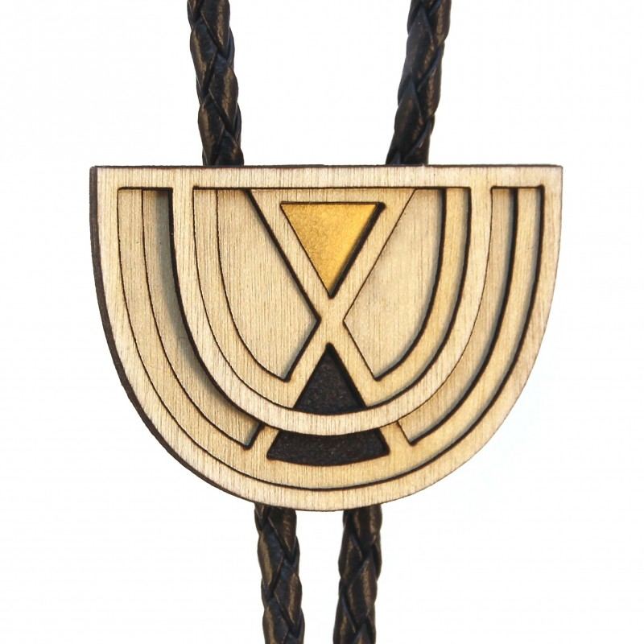
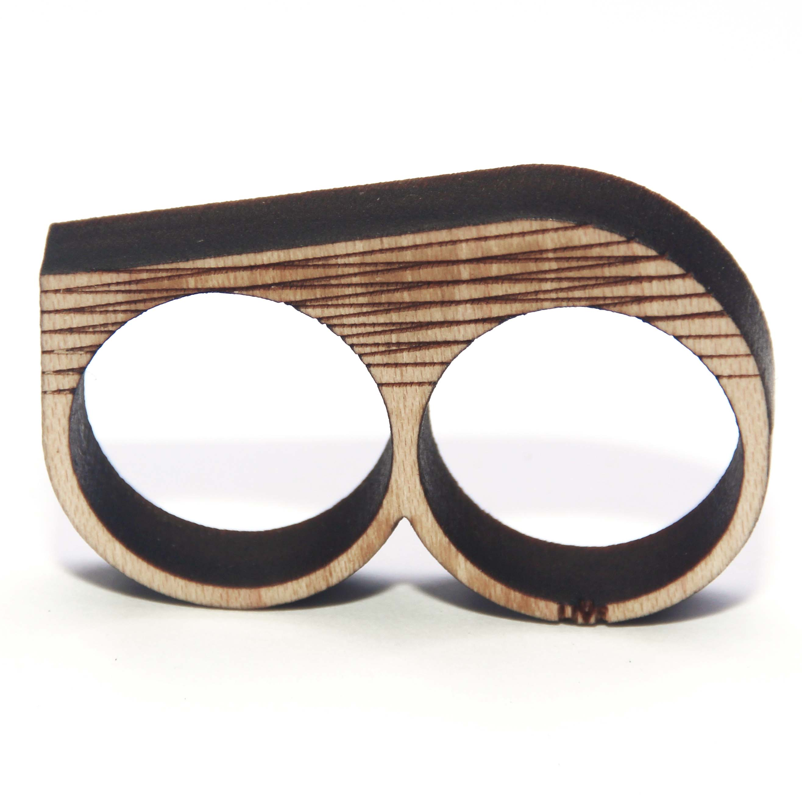

Diamonds Are Evil
Not all diamonds come with blood shed or conflict. One of them is the Austin, Texas based jewelry and design duo “Diamonds Are Evil.” Definitely a name with shock value, but it comes from a place of genuinity. The husband and wife pair are exposing the ills of the diamond industry in a beautiful and sustainable way with their intricate one of a kind wood cut creations ranging from earrings to necklaces, bolo ties and cufflinks.
The former architect and engineer began their business using leftover wood scraps because it was readily available to them, and knew they were on to something when they were able create beautiful ornate shapes, designs and patterns using a laser. Their designs are like snowflakes, none are quite the same. They find their inspiration studying different periods, cultural artisans and the wood medium itself. They may say “diamonds are forever,” but in order to truly be forever, sustainability, and good karma is key, which they’ve definitely nailed.
amfm: Why was the diamond industry something that you wanted to tackle with your brand and name? Was this something intentional in the beginning when you launched Diamonds Are Evil and in your choice of using wood?
diamonds: We chose our name to bring awareness to consumers about the diamond industry. Our focus was on that because we started out making jewelry, so we wanted to point out the atrocities of the industry that we were in. When people see our name or sign at a show, it raises questions in their minds if they aren't already aware of negative aspects of the diamond industry. In turn, we decided to use only materials that we could ethically and sustainably source. We began with wood because we wanted a material that acted as a canvas for our designs. We wanted to take a simple material and elevate it to something beautiful and valuable with the design alone.
amfm: You said the brand name itself and ethics of the company start a conversation. What are some interactions you've had because of the brand and what it stands for, either positive or negative?
diamonds: We definitely get all kinds of reactions from people! It's amazing to me how many people are still so unaware of the atrocities of the diamond industry. We never try to shame people for having diamonds, merely answer questions and educate. Some people get defensive of their diamonds, claiming that they are 'conflict free' (which isn't usually a verifiable fact), while other people just tell us how much they love our name. I hope that we've at least convinced a few people that they don't need a rock that has such a shady ethical background!
amfm: Why do you say you escaped your careers?
diamonds: That's really just a term that I use for leaving the profession of Architecture. I think that many Architects absolutely love what they are doing within the profession and so this doesn't apply to them (my dad being one of those - he can't imagine ever doing anything else, and he is so talented and natural at it that I can't imagine him as anything other than an Architect!), but I also think that some Architects can feel confined by the profession and want to escape to do something else creatively that is more about design and craft - furniture design, jewelry, home decor. It's so nice to not be tied to a construction schedule or the long, arduous process of construction documents, permitting and construction administration! Michael worked as an Engineer for a brief time. Long enough to appreciate working for himself and know that wasn't the path for him.
amfm: How have your backgrounds in architecture and engineering influenced your work with Diamonds Are Evil?
diamonds: My background in Architecture was a huge influence on the founding of Diamonds Are Evil, really. In school, I was introduced to laser cutting as a way to build models for design studio. I loved making intricate models for my final presentations for class. I used the diagrammatically, to show my explorations of the sites, as well as to show the final design in a physical form. After becoming familiar with them through school, I wanted to use them for everything! I love the immediacy of the virtual product becoming a reality through the laser. Michael's Engineering background came into play in different ways throughout founding Diamonds Are Evil and the creation of products. His structural and technical knowledge allows us to push the limits of the materials we use, and explore new ways of creating forms with laser cut materials. He is constantly testing our designs for their longevity and wear and helping us to create the best product we can possibly put out into the world!
amfm: You started using scraps of wood from architecture projects? What does the design process look like, do you draw it out?
diamonds: Michael ran the laser machines in the School of Architecture while we were both in school. The students would usually come in with these really interesting, repetitive shapes to cut out for their models and just throw away the remnants once their materials were done. I was painting at the time, so Michael would save any unique, abstract remnants for me to use as stencils to add texture to my paintings. In time, we began exploring what else we could do with the scraps, and eventually began making jewelry. We quickly switched from saving scraps to designing our own pieces. We start with a concept for a collection that we want to create, which can be abstract, such as '1960s futurism' or draw on history, such as our latest collection based on Egyptian art and architecture. From this, we sketch out shapes and forms that are inspired by that concept. These are very rough sketches, just to give us a place to start. From there, we move into a computer drafting program to begin finalizing the design. After cutting a few iterations of the same design, we can choose which one to use as the final product.
amfm: Is one of you more artistic while the other executes?
diamonds: It really takes both of us to create our best pieces. Michael will give me some really abstract direction for a piece that he is thinking about that doesn't really mean anything in his head yet, and I can take that idea and translate it into the beginning of a design. Once I get the design to a certain point, I cut it out once and hand it off to him to push further. We then collaborate in the final part of the process.
amfm: What is the dynamic like for you two working as a couple? You said that the experience has not worn your relationship down but has made it stronger. In what ways have you seen it evolve with your business?
diamonds: We work well together. There are obviously times throughout the year that work can be stressful and hectic, but if we remind ourselves that work is not life, it keeps us from allowing that stress to permeate other areas of our lives. I'm actually usually the only one that gets stressed, and Michael is great at reminding me that I am the only one that has expectations of myself. As our business has grown, we've been able to lean on each other when it's tough, and that has really strengthened our relationship. We also get to celebrate milestones together, travel together and skip work together when we both would rather be outside riding a bike!amfm: What was the catalyst for wanting to start your own small business? Do you aspire for it to be a large scale business?
diamonds: We really knew we wanted to start our own small business from the minute that we first created what we thought was a viable product back in school. From there it was all about growing the business enough in our spare time to make the leap to full-time. We both love the flexibility of having our own business. I particularly love the multitude of jobs that need to be taken care of within a small business and how that constantly challenges me to learn something new. We definitely aspire for it to be a larger business than it is right now. Our goals for the upcoming year are to add a few new product lines, begin teaching classes, and grow into a larger, more prominent space.
|  |  |
For more from Diamonds Are Evil:
photo credits: diamonds are evil